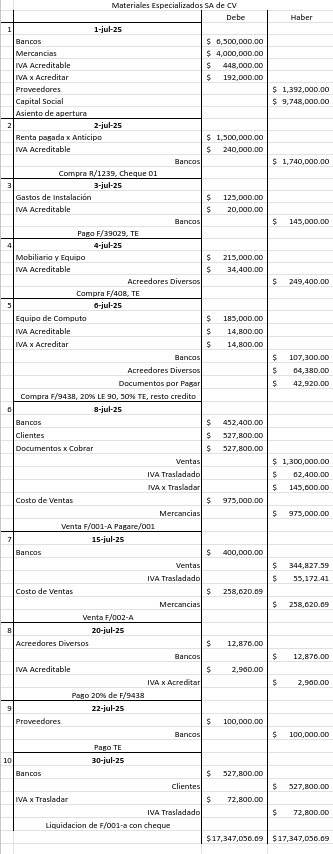
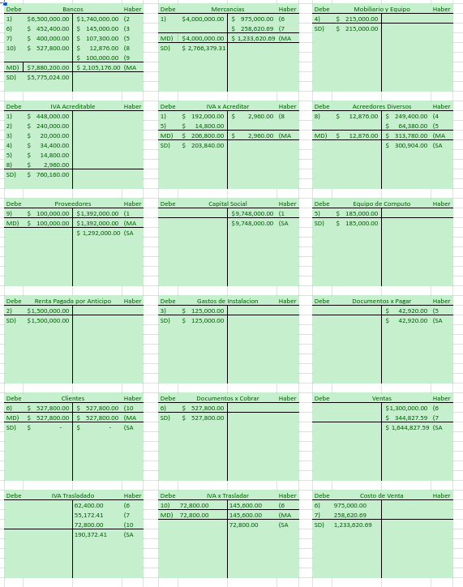
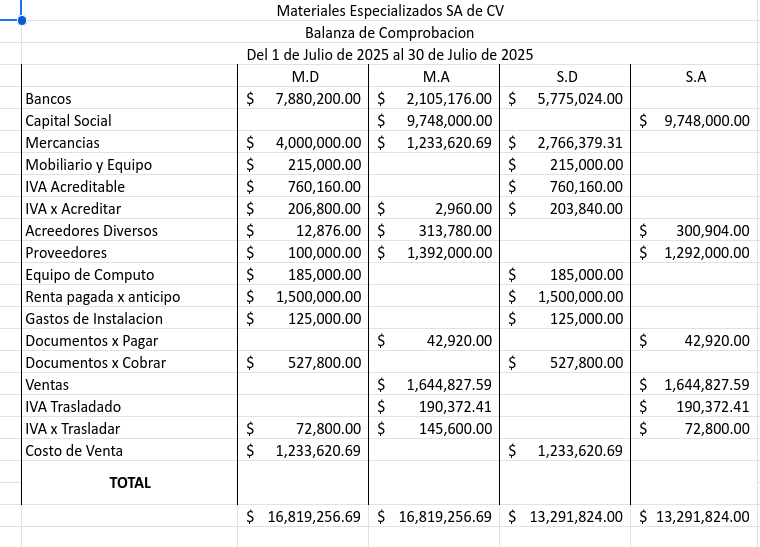
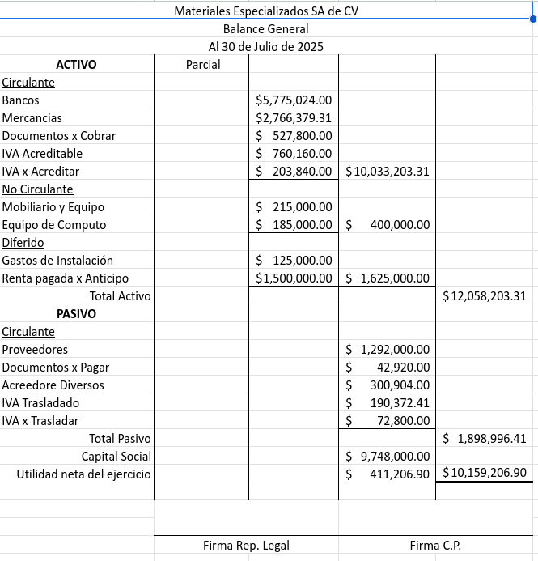

Práctica #6: Operaciones Comerciales
La empresa
MATERIALES INDUSTRIALIZADOS SOL S. DE R.L. DE C.V.
se constituye el 01 de julio de 2025 con el siguiente capital:
Capital Inicial
- Bancos: $6,500,000
- Mercancías: $4,000,000
- IVA Acreditable: $448,000
- IVA por Acreditar: $192,000
- Proveedores: $1,392,000
Transacciones Realizadas
-
01 de Julio: Constitución de la empresa con el
capital inicial
-
02 de Julio: Rentamos una bodega por $1,500,000 +
IVA y se realiza cheque No. 01, recibo No. 1239
-
03 de Julio: Se pagan gastos para acondicionar la
bodega por $125,000 + IVA y se realiza una transferencia
electrónica, factura No. 39029
-
04 de Julio: Se compra mobiliario y equipo de
oficina por $215,000 + IVA y nos otorgan crédito, factura No. 408
-
06 de Julio: Se compran equipo de cómputo por
$185,000 + IVA por el 20% firmamos una letra de cambio No. 90, el
50% realizamos transferencia electrónica y por el resto nos otorgan
crédito, factura No. 9438
-
08 de Julio: Se venden mercancías por $1,300,000 +
IVA por el 30% nos realizan depósito y por el 35% nos firman un
pagaré No. 001, el resto otorgamos crédito, factura No 001-A, costo
de ventas 75%
-
15 de Julio: Vendemos mercancías por $400,000 IVA
incluido y nos realizaron depósito, factura No. 002-A
-
20 de Julio: Pagamos el 20% de la factura No. 9438
con depósito
-
22 de Julio: Pagamos $100,000 al proveedor con
transferencia electrónica
-
30 de Julio: Nos liquidan la factura No. 001-A con
cheque
Libro de Diario
Registro cronológico de todas las transacciones

Libro Mayor
Cuentas T con movimientos y saldos

Balanza de Comprobación
Verificación de la ecuación contable

Balance General
Estado de la situación financiera al 30 de Julio de 2025
